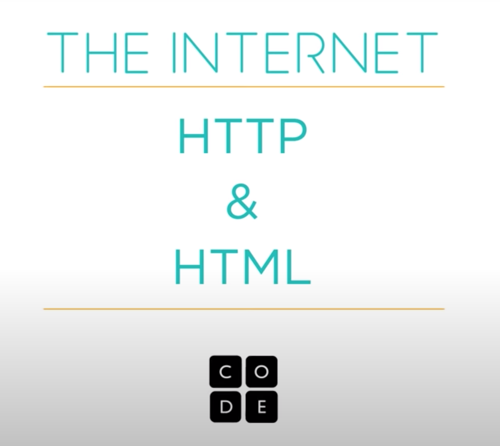

Physical Design
Floor Design
The above sketches are to demonstrate how the installation will be layed out in the room. These designs have been created for a square room, with equal length walls. This means if the actual installation gallery space is a different sizes, alterations will have to be mad to the floor plan. You can see below a persepective drawing. The outer walls will be lined with mirrors, reflecting the coloured lights from the ceiling and hitting the disco balls. There will also be glowing boxes used to get to the disco balls. The ceiling railing will hold the cords and disco balls in place.Disco Ball Design
These sketches show the disco ball design and how it will operate. Will have to keep in mind the disco ball size, ensuring it is large enough to fit over anyone's head. The average head circumference is 57cm's so will have the disco ball larger than 90cm's to ensure a comfortable fit. Inside will contain the hundreds of pixel screens, creating a 360 degree video for the viewer to rotate around inside the disco ball to watch. These two sketches are used to show how the balls will operate.Wires & lighting
This image of a telephone pole shows the inspiration behind how the cables in the installation will look like with these wires connecting the disco balls. They need to be big thick cords in order to portray the idea of "internet cables". How they all connect is also important, and creating a spider web of cords is the design goal. The lighting is also very important, hence I have added a second image from a Te Papa installation of what these light boxes would look like attached to the ceiling railing, diffusing soft colours.Location
The location of the installation is an important thing to consider as reaching a wide audience is the key goal of the work, and educating more people on what the internet is and how it works. I have come up with two different options for locations which both have benefits and negatives seen below. The final decision will only be made closer to the time of installation.Option 1 - Adam Art Gallery
Option one is to have the installation at Victoria Universities Kelburn campus art gallery "Adam Art Gallery". This location is suitable because this region gets the highest rate of young adults visiting it, meaning it will reach a larger audience. The only negative to this is that majority of visitors to the installation will be university students, implying that other demographics might not see the installation. The gallery is also not very big and quite narrow, meaning adjustmenst would need to be made to the floor layout. However, this location is still very suitable since university students are my major target audience.
Option 2 - Te Papa Museum
Option two is to have the installation at Te Papa Museum on the waterfront. This is a much larger space for the installation to go, with a larger amount of foot traffic. This would allow for the installation to reach a much wider audience. It also means I can use a much larger physical space for the work. Te Papa would definitely be more beneficial but would come at a higher cost to rent the space. The equiptment and technology is also more advance than the Adam Art gallery, meaning better chance of a higher quality interactve exhibit. Te Papa also features multiple other interactive installations, meaning my installation would fit in.
Colour Palette
Although this is a physcial space and not a website or application, colour decisions still need to be made to the space. The colour palette shown below is an indication of what the space may look like. As all the walls are mirrors, there will be lighting above this projecting these colours, with the back wall being white. The cords hanging from the ceiling connecting the disco ballas will just be black. The box steps for the user to step on will also be painted these colours. The 360 degree video inside the disco ball will just be regular colour.Inspiration
Visual Content
Since the installation will feature 360 degree videos inside the disco balls, these videos have been pre-choosen. In total there will be 8 disco balls to choose from, all featuring different educational videos on how the internet works. These 8 videos will touch on a variety of different topics and have been chosen from the code.org youtube playlist that was played in MDDN201. Each image below is the link to the video that will play in each associated disco ball.1.
The first video features an introduction into how the internet works, explaining the history of how the net and how no one person is in charge of it.2.
This video features information how the physical infrastructure of the internet moves information around.3.
This video will feature information about about the ins and outs of ho networks talk to each other and what makes the internet tick.4.
This video will explain what keeps the internet running and how information is broken down into packets.5.
 This video will give a detailed explaination of how the internet works using HTTP and HTML.6.
This video explains how cryptography allows for the secure transfer of data online, explaining the 256 bit encryption, public and private keyes, SSL & TLS and HTTPS.7.
This video will introduce the most common types of cybercrime including viruses, malware, ddos attacks and phising scams.8.
 This video will cover how special programs such as "spiders" scan the internet before you even type in your search terms to what determines which search results show.
This video will cover how special programs such as "spiders" scan the internet before you even type in your search terms to what determines which search results show.
Instructions
In terms of the physical installation, it is very important to have a set of instructions as you walk in in order to guide the users through the space. There will also be sign posts next to each disco ball that explains what the video content is, as mentioned in the Visual Content in the above section. the first image below is what the typography instructions will look like when you first step inside the installation. The second image is an example of what each signpost will look like next to the corresponding disco ball.